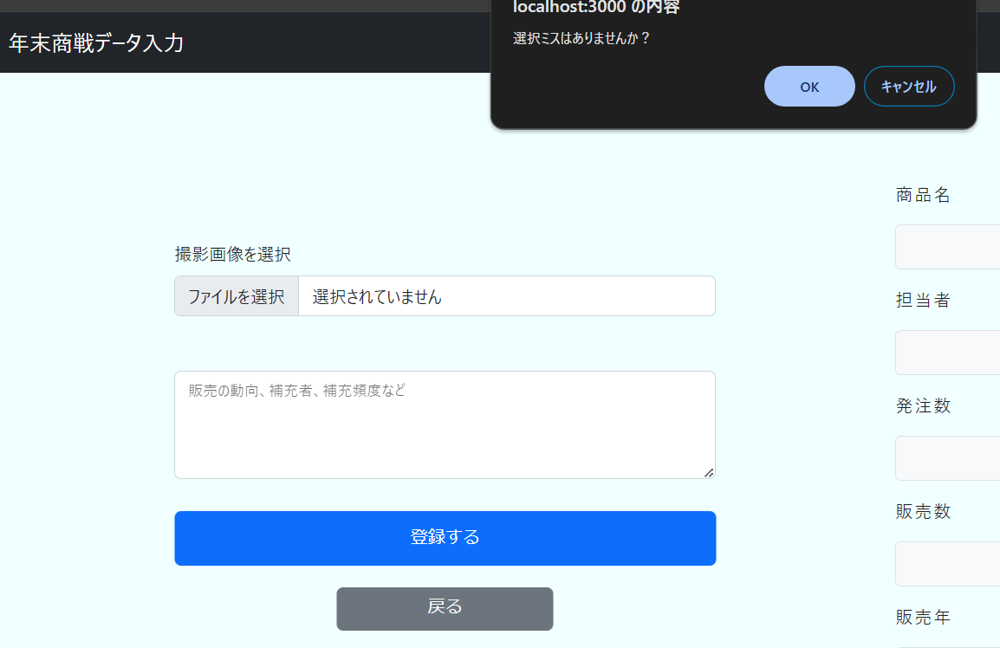

Year-End(データ登録型アプリ)
開発環境
Ruby / Ruby on Rails / JavaScript / jquery / Bootstrap / Slick / MySQL / GitHub / Visual Studio Code
-
概要
制作時間 60時間 URL https://year-end-userid.onrender.com/ ID pipapipa PASS hiro9808 -
動作テスト
テスト用アカウント
mail abc123@123.com PASS abc123
OUTLINEアプリケーションの概要
オリジナルアプリケーションはスーパーマーケットの繁忙期年末商戦において次年度の参考になるよう、情報を残すため。
1 ユーザー登録はアプリケーション配信後、店舗が行う。
2 商品詳細ページにアクセス後、情報を入力し登録する。
3 登録内容（現担当者名、商品名、発注数、販売数、販売年、展開方法、展開場所、天気、欠品の有無、販売期間、商品説明コメント）
-
開発に至った経緯
前職では年末商戦の数字を事務所の1台のPCで自身で調べたjanコードなどを入力し販売数を調べ,紙に書き出し保管しておくという工程があり、手間がかかっていた。
情報も担当者によってほぼ書いていないなどといったこともあり、店舗によって差があった。
情報が統一されたことにより差をなくす、また工程の短縮に繋がるようアプリケーションを開発した。
-
開発で工夫したこと
PCの操作、データを入力することが苦手な担当でも直感的に操作できるように
選択している箇所がわかるようBootstrapを使い枠が浮かび上がるよう実装
データを登録する際注意書きのダイアログが出る。
登録したデータは年別に表示してあり検索するときも年別にできるよう実装。
OTHERSその他実績
-
Year-End(データ登録型アプリ)
Ruby / Ruby on Rails / JavaScript / jquery / Bootstrap / Slick / MySQL / GitHub